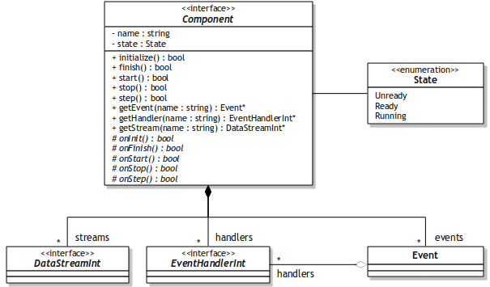
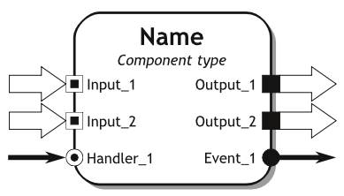
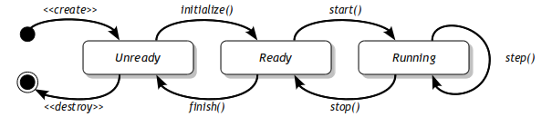

[Manuals]
Introduction
The goal of a perceptual task is to aggregate sensory data and extract useful information - useful for example from the point of view of a robotic control system, as well as useful for a human, solving some perception-related problem.
It is obvious that in infinite number of diverse perception (e.g. vision or speech recognition) tasks the same elements can be found, thus the division of the processing stream into small and lightweight blocks is required, in order to raise their reusability.
According to the definition, a component is a software package, a web service, or a module that encapsulates a set of related functions (or data).
Class diagram

The Component class diagram presents the component abstract base class in the surrounding of classes being part of its exchangeable interfaces:
- DataStreamInt is a class representing interfaces through which data processed can be passed (in as well as out),
- EventHandlerInt can be utilized for retrieving commands from other parts of the system (in order to change its working mode, parameters used in algorithm etc.),
- Event can be used to push command to other components.
- Note:
- Interfaces are created and linked dynamically during the load of given task.
Component structure
The structure of an exemplary component is shown below.

The square blocks are related to the data streams (data flow). The round blocks are related to events (command flow).
- Note:
- For more details regarding the structure please click here.
Component states

There are three main states of the component:
- Unready - Component was loaded from the external library, however it wasn't initialized yet,
- Ready - Component was initialized and it is ready to use,
- Running - Component is in the working mode - it can receive and send both data, as well as emit and handle events.
Component types
Component are divided into four main types:
- Source - Component responsible for retrieving data from external devices (such as cameras or microphones) or files. Typically a source deliver one output datastream.
- Processor - Component that process data retrieved from other components (through input datastreams) and passes processed data to others (through output datastreams).
- Sink - Component basing on only one input datastream. Sinks can be utilized for saving processed data to files (single images, their sequences or movies) or displaying results on screen.
- Proxy - Utilized for communication with external applications, e.g. robotic control systems, such as MRROC++ or OROCOS, that can utilized received information in control.


{kind=link}